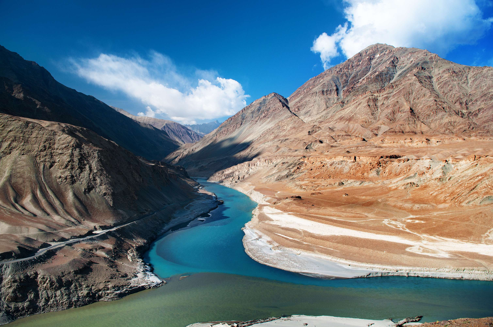

About: Ladakh is a high-altitude desert known for mountains and monasteries.
Best Time: May – September
Weather: Cold and dry
Route: Reach Leh → Explore locally
✈ Airport: Leh Airport
🚆 Railway: Jammu Tawi (nearest)
🚌 Bus: Leh Bus Stand
If you already visited, help others and us 🙌